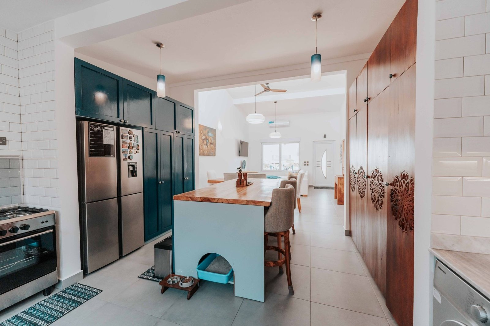
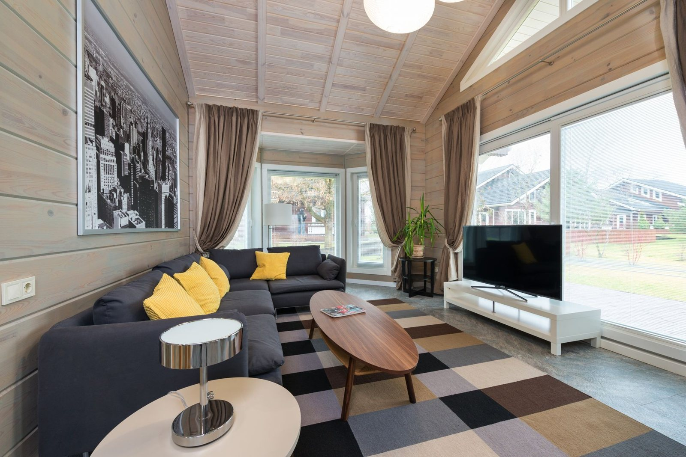

Poznaj naszą pracownię
Najpierw pomiar i projekt, decyzja potem. Mebel powstaje pod Twoje wnętrze - ze skosem i krzywą ścianą włącznie.

Jak pracuję
Mebel, który zmierzyłem i zaprojektowałem, montuję też sam. Jak coś przy ścianie nie gra, nie szukam winnego - wiem, co poprawić, i robię to od ręki.
Jeden człowiek od pomiaru po ostatni front, więc nie ma komu zwalać winy. Pracuję na terenie Strzelec Opolskich, Opola i okolicznych miejscowości.
Trzy rodzaje mebli na wymiar
Kuchnie na wymiar
Zabudowa pod Twój metraż - od frontów po blat i oświetlenie pod szafkami.
Szafy i garderoby
Systemy suwane i rozwierane, dopasowane do skosu, wnęki albo poddasza.
Zabudowy wnęk i skosów
Meble pod nietypowy kąt ściany - tam, gdzie gotowe meble z sieciówki nie wejdą.
Co mówią klienci
Ocena 4,9 na Google, 9 opinii.
„Pełny profesjonalizm. Jestem bardzo zadowolona jak i z kuchni, tak i z sypialni. Takich ludzi trzeba doceniać.”Daria Joszko
„Serdecznie polecam, pełen profesjonalizm. Montaż poszedł sprawnie, bez zastrzeżeń. Mebelki solidnie wykonane.”Madzia Przybyła
„Pełen profesjonalizm. Wysoka jakość wyrobów. Korzystałem wiele razy i zawsze byłem bardzo zadowolony.”Marek Flaga
Masz robotę do zrobienia? Zapytaj o wycenę
Bez zobowiązań - opowiedz, co trzeba zrobić, a my podpowiemy jak i wycenimy.